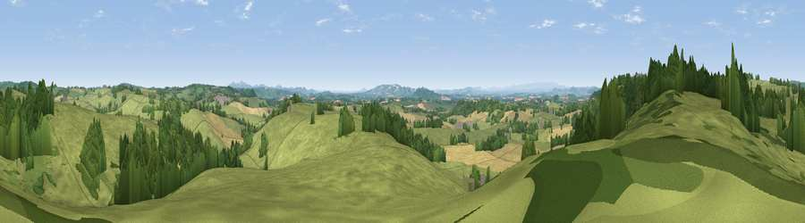

Viewpoint near Little Cowarne
#13460 in England · top 35% of its area beats it · near Little Cowarne · footpathWhere it is
The exact computed spot (SO 60525 50575). Click the marker for map links.
Public access: a public right of way passes within 29 m of this spot. Computed from Natural England's CRoW access layer and OpenStreetMap rights of way — not the legal definitive map. Always verify locally.
The view, rendered

A 360° render of this exact spot computed from the terrain model, tree cover and land cover — summer colours, afternoon light, calibrated against photographs of famous viewpoints. Real trees, hedges and buildings will differ in detail.
The panorama
Grey silhouette: terrain skyline in each direction (720 bearings, Earth curvature and refraction included). Dashed green: skyline with trees (+15 m) and buildings (+8 m) as obstacles. Blue strip: how far the ground is visible on each bearing.
Where the view opens
Wedge length = distance to the farthest visible ground on that bearing (vegetation-aware). Rings at 10, 25 and 50 km.
What fills the view
65% grassland · 20% woodland · 14% cropland ·
Angular shares of the visible panorama (visual magnitude), not map area. Landscape diversity 0.39 (0–1 Shannon).
Key numbers
More beautiful places nearby
The staircase of upgrades: each row has a higher view potential than everything closer. Driving times are estimates from straight-line distance, calibrated against real road routing — check an actual route before setting out.
| Place | Direction | Drive | Score |
|---|---|---|---|
| Viewpoint near Little Cowarne | WNW · 1 km | ~4 min | 69.6 |
| Viewpoint near Pencombe | NNW · 4 km | ~10 min | 72.8 |
| Seagar Hill | S · 12 km | ~22 min | 82.1 |
| North Hill | ESE · 17 km | ~30 min | 86.8 |
| Worcestershire Beacon | ESE · 17 km | ~30 min | 87.1 |
| Viewpoint near West Quantoxhead | SSW · 118 km | ~143 min | 87.9 |
| Viewpoint near West Quantoxhead | SSW · 119 km | ~143 min | 88.7 |
| Holdstone Hill | SW · 142 km | ~166 min | 90.2 |
52.15204, -2.57837 · source: screening · position refined by local search. Computed location — check access rights before visiting.